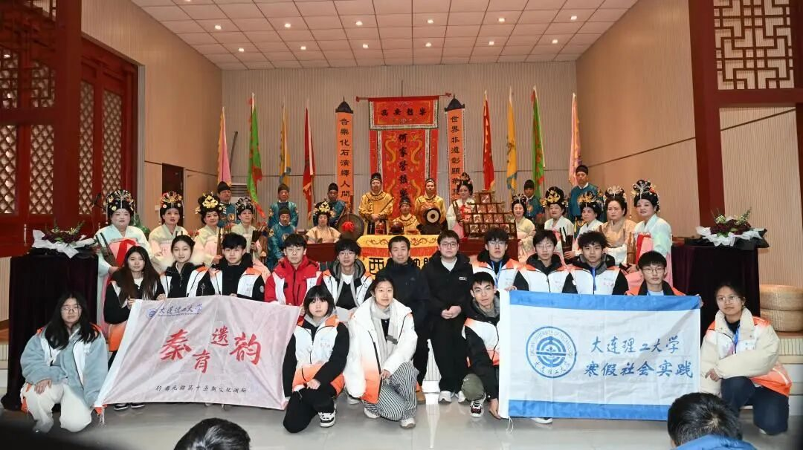

【行者无疆·秦育遗韵】个人实践感悟——杩健辉

既然选择了远方
便只顾风雨兼程
五天的西安实践，仿佛一场穿越千年的文化对话。从碑林的碑刻到高家大院的皮影，非遗的魅力在历史与现代间流淌，传承的使命在心中悄然生根。
~END~
来源 | 行者无疆实践团
图片 | 行者无疆实践团
文字 | 杩健辉
编辑 | 杩健辉
审核 | 李凌志 杩健辉
责编 | 邹靓靓

既然选择了远方
便只顾风雨兼程
五天的西安实践，仿佛一场穿越千年的文化对话。从碑林的碑刻到高家大院的皮影，非遗的魅力在历史与现代间流淌，传承的使命在心中悄然生根。
~END~
来源 | 行者无疆实践团
图片 | 行者无疆实践团
文字 | 杩健辉
编辑 | 杩健辉
审核 | 李凌志 杩健辉
责编 | 邹靓靓
SAME EXPEDITION / 同期推文

行者招新啦！梦回津门·寻根天津Dreaming back to the Tang Dynasty晨钟暮鼓，烟雨又湿海河畔，古渡口边送远游。古文化街，古韵再扣非遗风，津门故里通北

在这五天的非遗探索之旅中，我们穿梭于西安的大街小巷，深入体验了丰富多彩的非遗文化。从碑林博物馆、高家大院的文化熏陶，到非遗博物馆与陈列馆领略各类非遗展品的魅力；从台沟村探寻造纸

回顾往昔，我的心中充满了感激与期待。感激有机会能够亲身体验并学习到这么多宝贵的知识；期待未来能有更多的机会参与到类似的实践中，为非遗文化的保护和发展贡献自己的一份力量。行者无疆